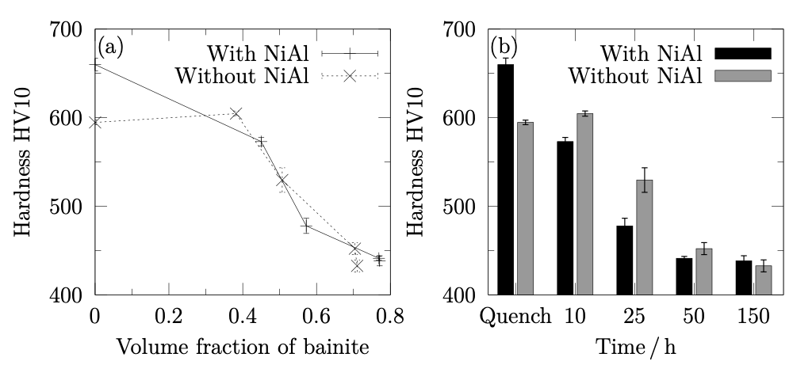
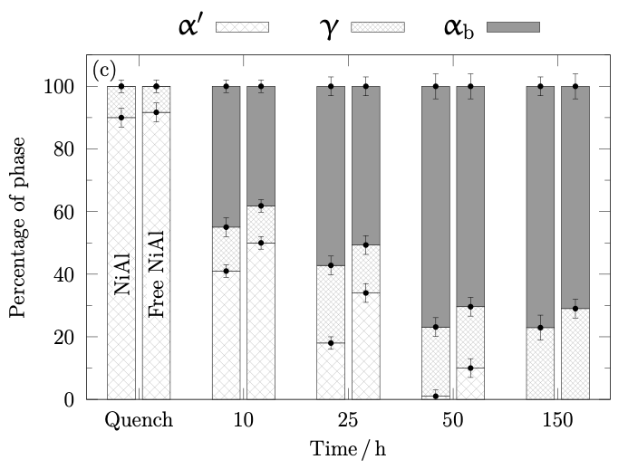

A successful thesis begins with disciplined planning and meticulous execution. The writing process should not be an afterthought, it is integral to the research itself. The following principles are designed to help doctoral candidates produce work that is scientifically rigorous and professionally presented:
- Use LaTeX with plotting tools: LaTeX is highly recommended for theses in the Alloy Design & Phase Transformations Research Group, especially where mathematical notation, complex referencing, and figure integration are involved. It ensures consistent formatting and professional presentation. For example, equations like \( \Delta G = \Delta H - T\Delta S \) ΔG = ΔH − TΔS are rendered cleanly, and cross-referencing figures and tables is automated. Additionally, plotting tools such as Gnuplot, Matplotlib, or Origin can export figures with LaTeX-rendered labels and equations, ensuring visual consistency. Axis labels like \( C_{\text{eq}} \) Ceq or \( T_{\gamma \rightarrow \alpha} \) Tγ→α can be embedded directly into plots, matching the style of your written equations.
- Submit complete drafts: Supervisors will review only two drafts, individual chapters and the complete thesis. Submit chapters only when the full thesis draft is ready.
- Proofread before submission: Eliminate superficial errors before supervisor review to allow focus on scientific content.
- Clarity over complexity: Scientific clarity is paramount, but consistency in style and structure enhances impact. Avoid overcomplicating explanations.
- Adapt published work: Prior publication is encouraged, but journal articles must be rewritten for thesis inclusion with smooth transitions and contextual clarity.
- Write with precision: Avoid jargon, excessive abbreviations, and convoluted phrasing. Write with precision and restraint.
- Be consistent: Maintain uniform terminology, units, notation, and referencing. A nomenclature list is strongly recommended.
- Use tools wisely: Use spellcheck tools (e.g., Microsoft Word, TeXmaker) and reference management software (e.g., Zotero, EndNote, TeXmaker) to ensure accuracy and consistency.
- Start early, revise often: Begin writing early in your research and revise iteratively. Avoid leaving writing to the final stages.
- Include all your work: Ensure that all the work you have done is included in your thesis. Negative results, failed experiments, or unexpected findings are valuable and demonstrate scientific integrity.
- Document assumptions and limitations: Clearly state any assumptions made in models or simulations, and acknowledge limitations in experimental design or data interpretation.
- Keep a writing log: Maintain a record of what you write and revise. This helps track progress and ensures alignment with your research objectives.
- Use figures to support—not replace—text: Figures should complement the narrative, not substitute for explanation. Always describe what the figure shows and why it matters.
- Respect the reader’s time: Avoid redundancy and filler content. Every paragraph should serve a purpose in advancing your argument or presenting your findings.
Effective scientific writing is not merely about conveying results, it is about guiding the reader through a logical, precise, and coherent narrative. In materials science, where complex mechanisms and data-rich analyses are common, clarity and structure are paramount. The following principles will help ensure your thesis communicates with impact and professionalism:
- Be precise and avoid repetition: Repeating phrases like “grain boundary migration” in successive sentences dilutes clarity. Instead, vary structure: “The migration of grain boundaries was observed....” followed by “This movement influenced phase stability....”.
- Use an impersonal and formal tone: Avoid phrases like “We looked at the microstructure....” and opt for “The microstructure was examined....”. This maintains academic neutrality and focuses on the work rather than the author.
- Define abbreviations once, then use them consistently: Introduce terms like “electron backscatter diffraction (EBSD)” or “continuous cooling transformation (CCT)” only once. Thereafter, use the abbreviation without reintroducing the full term.
- Limit brackets, abbreviations, and adjectives: Excessive use of terms like “(HAZ)” or adjectives such as “very fine grains” can clutter the text. Instead, write: “Grain refinement was observed in the HAZ, with average sizes below 2 µm.”
- Phrase goals clearly: Instead of “The aim of this chapter was....”, use “The aim of the work presented in this chapter was to quantify the effect of Ni addition on martensitic transformation kinetics.”
- Use active structure with passive voice: “A thermodynamic model was developed to predict phase stability in Fe-Ni alloys.” This is clearer than “Phase stability prediction was done using a model.”
- Ensure continuity and flow: When integrating published work, revise transitions. For example, instead of “This paper shows....” write “The following section builds upon previously published results, extending the analysis to ternary systems.”
- Use consistent terminology: If you refer to “austenite” in one chapter, avoid switching to “γ-phase” unless context demands it. Consistency aids comprehension and avoids confusion.
- Avoid vague expressions: Replace “some improvement in hardness” with “an increase of 15% in Vickers hardness was recorded following ageing at 600 °C.”
- Be cautious with metaphors or analogies: While tempting, phrases like “the alloy behaved like a sponge” are best avoided in formal writing. Instead, describe the mechanism: “The alloy exhibited high porosity, facilitating hydrogen absorption.”
- Use parallel structure in lists and comparisons: For example, instead of “The alloy was strong, ductility improved, and corrosion resistance was high,” write “The alloy exhibited high strength, improved ductility, and enhanced corrosion resistance.”
Even well-conducted research can be undermined by careless presentation. Attention to detail in writing, formatting, and notation is essential to maintain credibility and ensure clarity. The following are common mistakes observed in thesis writing, along with practical corrections and examples relevant to materials science and alloy design:
- Spelling errors: These are unacceptable in formal writing. Use spellcheck consistently. For example, “martensite” should not appear as “martinsite”. Use either British English or American English consistently throughout the thesis, do not mix styles (e.g., “colour” vs. “color”, characterisation vs. “characterization”, “aluminium” vs. “aluminum”).
- Inconsistent notation: If you use “\( M_{\text{s}} \)
Ms” for martensite start temperature, do not switch to “M_s” or “Ms temp” later. Use a nomenclature list to standardise terminology.
- Incorrect spacing after punctuation: There should be a space after a full stop or comma, but not after an opening bracket or before a closing one. Example: “(Fig. 3.5)” not “( Fig. 3.5 )”.
- Improper abbreviation formatting: Accredited abbreviations like “Ph.D.” or “C.V.” do not require spaces after full stops. Initials in names must be spaced: “G. M. El-Farouki”, not “G.M.El-Farouki”.
- Inadequate referencing: Always include article titles and consistent formatting. For example: “J. Mater. Sci., 2025, 56, 1125–1155” is better than “JMS 2025”. Avoid mixing citation styles.
- Incorrect units and notation: Use SI units and proper spacing: write “60 MPa” not “60MPa”; “Fe–9Ni wt.%” instead of “Fe–9Ni %”. Avoid ambiguous expressions like “Fe–9Ni %” which do not specify weight or atomic percent. Use exponents for derived units: “120 kJ mol\(^{-1}\) ⁻¹” not “120kJ/mol”. Units should be in roman font, and mathematical variables in italics.
- Volume fraction vs. volume percent: Writing “70%” to describe a volume fraction is incorrect. Use “70 vol%” or “volume fraction of 0.70”.
- Mathematical notation errors: Variables should be in italics (e.g., σ, ε), while functions like log, sin, and exp remain in roman font. Subscripts and superscripts should be in roman unless they represent variables.
- Figures placed incorrectly: Figures must be integrated into the text, not placed at the end of chapters. Ensure fonts on axes and legends are readable (minimum size 15 pt if the figure occupies 1/3 of the page).
- Improper figure and table referencing: Use “Fig. 3.5” not “Fig.3.5”; “Table 1.7” not “Table.1.7”. Ensure these labels appear on the same line as the reference.
- Non-SI units in diagrams: Diagrams must use SI units. If using legacy diagrams with non-SI units, redraw them. A diagram showing “ksi” should be converted to “MPa”.
- Unacknowledged diagrams: Always acknowledge diagrams sourced from literature, even if redrawn. Intellectual content must be credited.
- Incorrect tense in reporting: Report experiments in the past tense. For example: “Hardness measurements were conducted using a Vickers indenter.”
- Misuse of comparison phrases: Use “Compared with” rather than “Compared to”. Example: “Compared with the quenched sample, the aged alloy showed improved ductility.”
- Misuse of plural terms: “Data” is plural. Write: “These data suggest…” not “This data suggests…”.
- Programme vs. program: Use “programme” for research plans, and “program” for software. Example: “The experimental programme included…” vs. “The simulation was run using Thermo-Calc software program.”
- Capitalisation of chemical elements: Do not capitalise element names unless at the beginning of a sentence. Write: “nickel was added…” not “Nickel was added…” unless it starts the sentence.
- Incorrect pluralisation: Avoid using “softwares” or “previous works”. Use “software” and “previous work” even when referring to multiple items.
- Capitalisation of scientific terms: “X-ray” must begin with a capital “X” as it is a proper noun. Example: “X-ray diffraction (XRD) was used…”
- Improper use of quotation marks: Use typographic quotes for clarity: “phase transformation” rather than straight quotes "phase transformation".
- Overuse of footnotes: Avoid excessive footnotes that interrupt reading flow. Integrate essential information into the main text where possible.
- Unclear figure legends: Legends must explain all symbols and lines. Avoid using keys that require the reader to cross-reference. Instead, label curves directly in the figure.
- Missing micrometre markers: Micrographs must include scale bars. Do not place markers on the page near the image, embed them within the image itself.
Figures and tables are essential components of scientific communication. They must present data accurately and integrate seamlessly with the narrative of the thesis. This section outlines best practices for designing and presenting visual and tabular content, ensuring clarity, and consistency.
Figures
- Consistency with Text: All notations and symbols in figures must match those used in the main text. Avoid introducing unexplained elements.
- SI Units Only: Diagrams must use SI units. Legacy figures with non-SI units should be redrawn.
- Source Acknowledgement: If a figure is adapted from literature, cite the original source, even if redrawn, especially when the intellectual content remains unchanged.
- Dimensionless Quantities: Axes should reflect normalized quantities (e.g., distance/m) to maintain clarity and comparability.
- Visual Clarity:
- Avoid using keys that require cross-referencing; label curves directly.
- Use minor ticks only when necessary (e.g., logarithmic scales).
- Use proper scientific notation: prefer \(10^{-3}\) 10⁻³ over "1E-3".
- Captions Matter: Ensure figure captions clearly explain all visual elements, including line styles and symbols.
Example: The figure below illustrates direct labeling, and caption clarity.


Fig. 1.1: Vickers hardness as a function of (a) volume fraction of bainite transformed isothermally at 250 °C, (b) transformation time, and (c) phase fractions determined using cooling dilatometric curves and X-ray data. 'Quench' samples represent a mixture of martensite and austenite. Interrupted tests at 10, 25, and 50 h lead to fully bainitic microstructures at 150 h.
Tables
- Clean Layout: Avoid vertical lines between columns to enhance readability.
- Concise Headers: Use clear, descriptive column titles.
- Units and Formatting: Ensure units are consistent and placed in headers, not repeated in every cell.
Example: The table below demonstrates proper SI units and best practices in layout and clarity.
Table 1.1: Mechanical properties of Alloy A and B at different test temperatures.
\( \sigma_{\rm PS} \) σPS and
\( \sigma_{\rm UTS} \) σUTS are the proof and ultimate tensile strengths respectively,
\( \varepsilon_{\rm U} \) εU and
\( \varepsilon_{\rm T} \) εT are the uniform and total elongations respectively, and
\( \varepsilon_{\rm A} \) εA is the reduction of area.
- Documentation: Ensure that all input parameters and settings used in software-based analyses are thoroughly documented.
- Figure Details: Include detailed information within figures, such as the software name, version, database used, and preferably a reference to the software. For thermodynamic or kinetic calculations, such as those performed using MatCalc, it is essential to specify the components and phases considered, along with the exact version of the software and database. An illustrative example is provided below.
Table 1.2: Thermodynamic modelling using MatCalc [X, Y]; with the Fe database version 5.62 to predict stable phase fractions with liquid, austenite, ferrite, cementite and NiAl allowed to exist in the calculations.